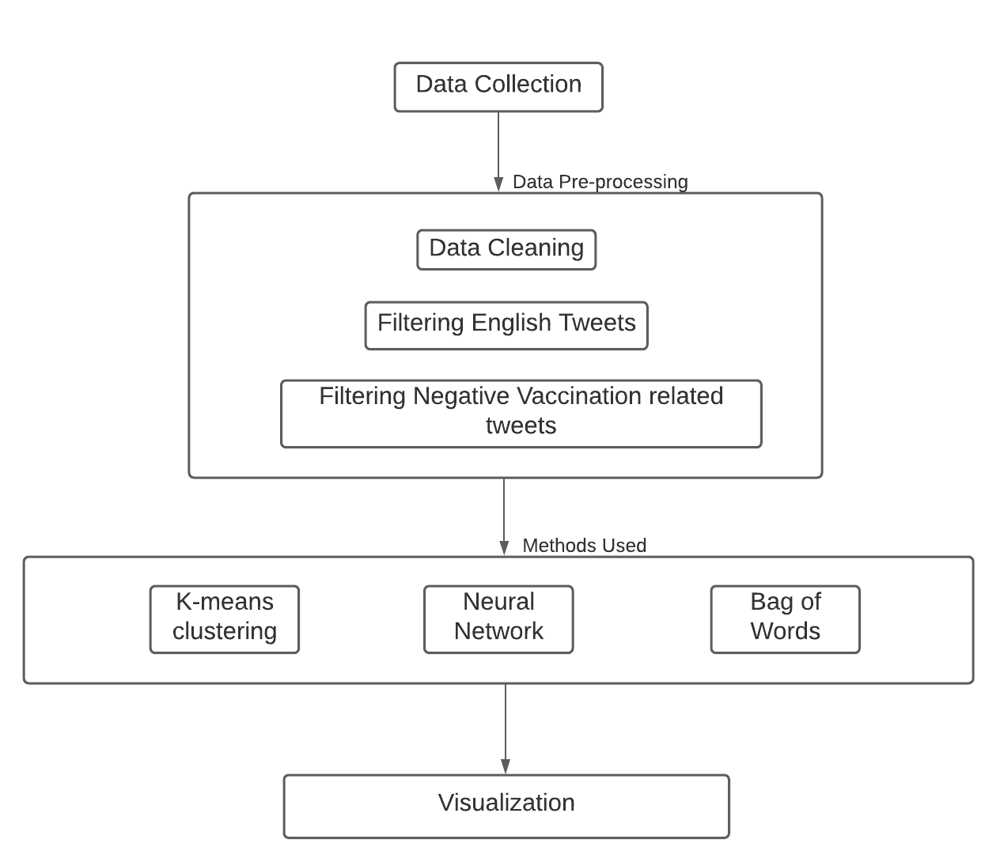

Rohan Jagiasi, Samiksha Marne, Sanjiti Bhargava, Aishwarya Teegulla
Right now, the world is in the need of rapid vaccination drives which will allow for herd immunity, which is the quickest way to come out of Covid-19 pandemic and return to normalcy.
Due to personal prejudices, local politics or orthodox beliefs, we have a considerable amount of population who are against vaccination drives. With the rise of social media, the dissemination of information (hence, potentially, misinformation) has become easier than ever before. Unsurprisingly, anti-vaccine activists have also began to utilize platforms like Twitter to share their views. As a result, their activism has expanded jurisdictions to include online propaganda.
The results from this project will help CDC focus on what areas to primarily focus on, to improve vaccination awareness. This project tends to determine the anti vaccine tweets related to covid-19 by collecting tweets from the twitter API and performing various algorithms to filter out the anti vaccine tweets . Using the location of these tweets’ source, the locations were plotted on the world map.
The dataset consists of Covid 19 vaccination tweets. The data collected from the twitter stream captures all languages, but the higher prevalence are English, Spanish, and French. The Structure of the data is: user’s tweet_id, date, timestamp, language of the tweet and the country code. These attributes can be used to mine the tweets, to find out the various regions where people have tweeted in favor or against the vaccines.
Based on the geographical location-based information extracted after clustering the anti vaccine related tweets, the government/ CDC can focus on educating the populace about benefits of covid 19 vaccine in those areas.
